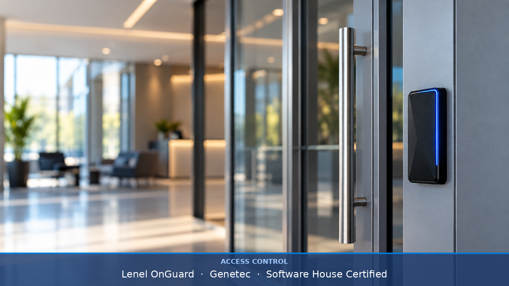
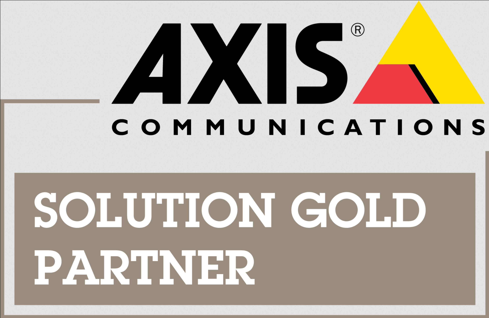
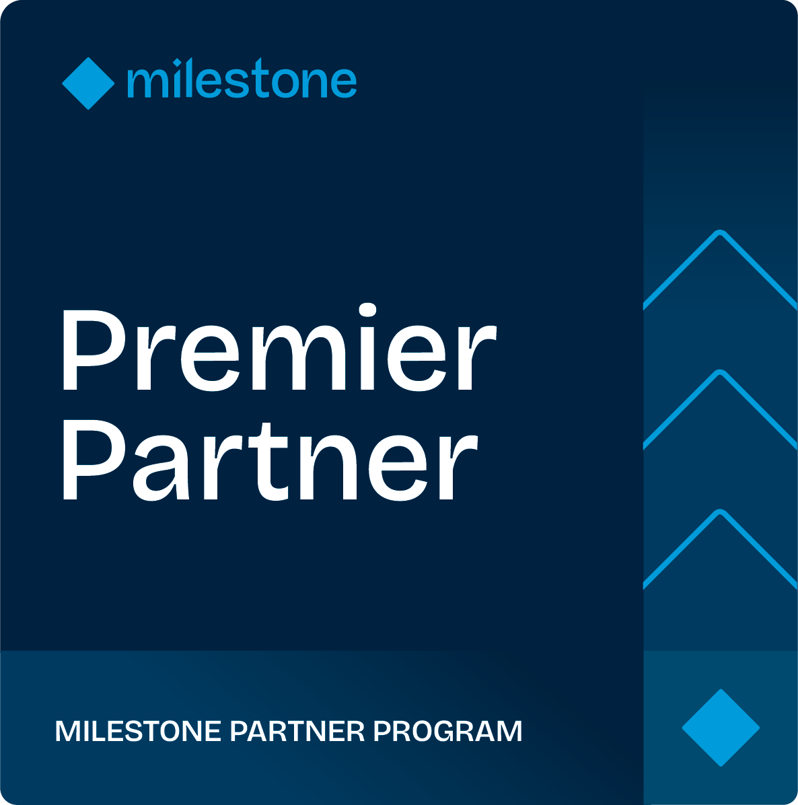
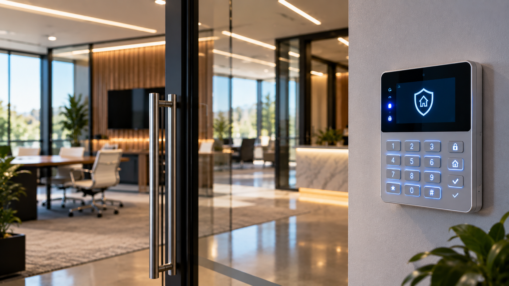
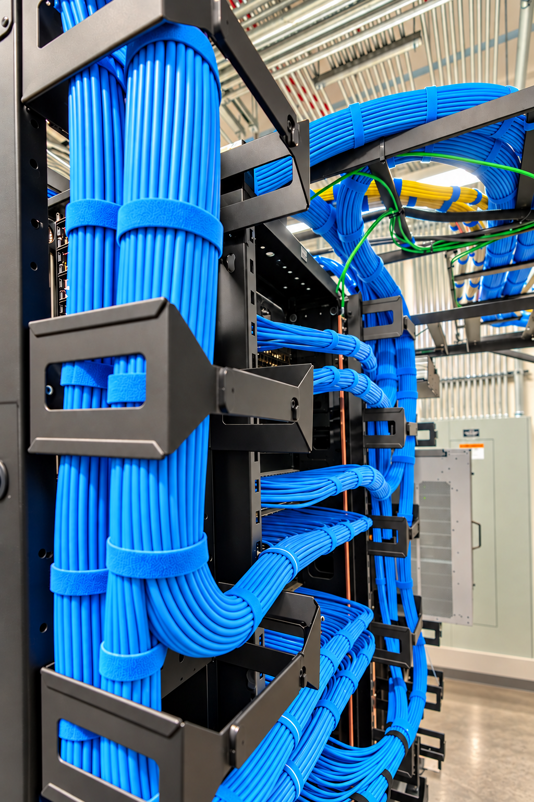

Comprehensive low-voltage solutions designed for security, communication, and performance.
NSW Integrated Systems is a Software House certified integrator, specializing in enterprise access control and physical identity management. From single-door solutions to multi-site PACS architectures, we design and deploy systems that protect personnel, assets, and data.
We have extensive experience serving healthcare, government, and commercial clients requiring advanced credential management, multi-site PACS architectures, and enterprise-grade physical identity solutions.

Complete IP video surveillance solutions from survey and design through commissioning and ongoing support. NSW deploys high-definition camera systems, centralized VMS platforms, and AI-enabled analytics to give you full situational awareness of your facility.
Featured Technology Partners


As an ACO-licensed alarm company, NSW designs, installs, and maintains intrusion detection systems for commercial, healthcare, and government clients. Our systems integrate seamlessly with access control and video to provide a unified security posture.

NSW delivers professional AV integration for corporate, healthcare, and institutional environments. From boardroom AV to large-venue digital signage networks, our team designs and deploys systems that communicate effectively and reliably.
The foundation of every integrated system is a reliable cabling infrastructure. NSW installs Cat6A copper, single-mode and multi-mode fiber, and all forms of low-voltage cabling to BICSI and TIA standards — ensuring your network is ready for today and scalable for tomorrow.

NSW is an Ambient AI partner, deploying intelligent video analytics that transform existing or new camera infrastructure into proactive security platforms. Detect, classify, and act on events in real time — without constant human monitoring.
NSW has deep experience in healthcare communication systems, including nurse call installation, upgrades, and integration for acute care, skilled nursing, and outpatient facilities. We work with leading nurse call platforms to deliver patient-centered communication infrastructure.
NSW Integrated Systems is a Biamp-certified integrator specializing in commercial sound masking and overhead paging systems. As an IBEW DAS-7 classified contractor, we design and deploy audio infrastructure that delivers speech privacy, ambient comfort, and facility-wide communication — built right the first time.
From healthcare campuses requiring HIPAA-sensitive speech privacy to corporate offices and transit facilities needing reliable paging and mass notification, NSW brings certified expertise and union-quality installation to every project.
Technology Partner